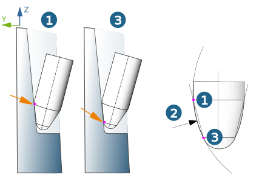
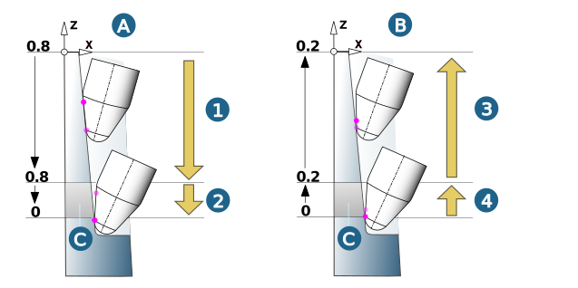
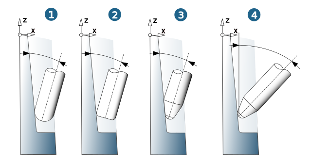

5 axes
Contact mode
Tip: The tool is guided on the surface with the ball mill tip (ball mill, barrel tool with ball tip type) or the corner radius (bullnose end mill, barrel tool with bullnose tip type).
Barrel: The tool is guided on the surface with the barrel radius.
Contact point setup
Only available for the Barrel tool tool type in the Barrel contact mode.
Parameter up / parameter down: Specify the contact point of the tool with the surface to be machined. Values between 0 and 1 are permitted. The value 1 guides the tool on the upper contact point (1) of the barrel radius (2) to the surface. The value 0 guides the tool on the lower contact point (3) of the barrel radius to the surface.
|  |
To ensure that the entire surface can be machined, the contact point of the tool to the surface varies during the up and down movement, starting from the defined value (0.8/0.2) up to the value 0 so that machining always takes place with the optimal inclination for the specific cutting conditions. At the same time, this also causes the tilt angle of the tool to change during the up and down movement.
(A) Down movement: contact point = 0.8 to 0. (B) Up movement: contact point = 0.2 to 0.
During the down movement, → (1) and → (2) are used. The feedrate Down blending (2) applies in the area of the transition in which the tool approaches the bottom surfaces (C).
During the up movement, → (3) and → (4) are used. The feedrate Up blending (4) applies in the area of the transition in which the tool moves away from the bottom surfaces (C).
|  |
Fillet inclination
Min. lag angle: Define the minimum permissible lateral inclination of the tool to the surface to be machined.
Available for ball mills (1), bullnose end mills (2) and barrel tools in contact mode Tip (3). Default = 15°.
Machine limitation
Max. angle to Z: (4) Define the maximum permitted angle to the Z axis of the frame. Default = 45°.
|  |
Tilt strategy
Prefer fixed: If the geometric conditions allow it, collision-free machining takes place with a fixed tool inclination for the entire area.